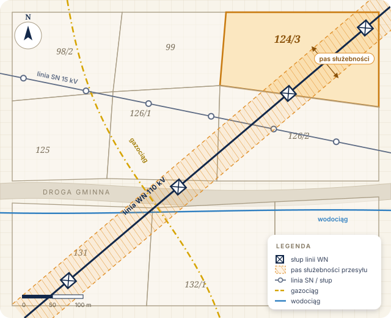

Wynagrodzenie za ustanowienie służebności przesyłu
Obciążenie działki służebnością przesyłu następuje za opłatą — najczęściej jednorazową. Uregulowanie stanu prawnego porządkuje relacje z przedsiębiorcą na przyszłość.
umowa lub orzeczenie sądu
Kancelaria Adwokacka · adw. Michał Sieruga
Kompleksowa pomoc prawna w sprawach o ustanowienie służebności przesyłu oraz odszkodowanie za bezumowne korzystanie z nieruchomości przez przedsiębiorstwa przesyłowe.
Czego dotyczą sprawy
Przedsiębiorstwa energetyczne, gazowe, wodociągowe czy telekomunikacyjne często korzystają z cudzych nieruchomości bez umowy i bez wynagrodzenia. Właściciel ma prawo tego dochodzić.
Twoje roszczenia
Obciążenie działki służebnością przesyłu następuje za opłatą — najczęściej jednorazową. Uregulowanie stanu prawnego porządkuje relacje z przedsiębiorcą na przyszłość.
umowa lub orzeczenie sąduWynagrodzenie za dotychczasowe korzystanie z części nieruchomości bez tytułu prawnego — za okres ostatnich 6 lat, liczonych od końca roku kalendarzowego.
do 6 lat wstecz
Ważne orzeczenie
Wyrok wprowadził znaczące zmiany w relacjach między przedsiębiorstwami przesyłowymi a właścicielami działek, przez które przebiegają linie przesyłowe. Obecnie można domagać się roszczeń w większym wymiarze niż wcześniej oferowały firmy przesyłowe, a korzystna linia orzecznicza sprzyja zawieraniu ugód.
O kancelarii
Oferujemy profesjonalne usługi prawne w zakresie służebności przesyłu oraz uzyskiwania odszkodowań za bezumowne korzystanie z nieruchomości.
Sprawy prowadzi adw. Michał Sieruga wraz z zespołem prawników i specjalistów z zakresu wyceny nieruchomości i roszczeń. Każdemu klientowi zapewniamy spersonalizowaną i rzetelną reprezentację — od analizy dokumentów, przez wezwanie do zapłaty i negocjacje, aż po postępowanie sądowe.

Oferta · jak działamy
Celem rozpoczęcia współpracy skontaktuj się z nami telefonicznie lub e-mailowo i prześlij numer księgi wieczystej działki (nr KW).
Zadzwoń lub napisz. Podaj numer księgi wieczystej działki, przez którą przebiega sieć.
Przeprowadzimy bezpłatną analizę podstaw roszczenia i ocenimy szanse powodzenia.
Prześlemy ofertę z proponowanym wynagrodzeniem i szacunkiem potencjalnej kwoty.
Przygotujemy wezwanie, poprowadzimy negocjacje, a w razie potrzeby — postępowanie sądowe.
Po akceptacji oferty poprosimy o kilka dokumentów. Pomożemy je skompletować.
Najczęstsze pytania
Nie znalazłeś odpowiedzi? Napisz do nas — odpowiemy na pytania dotyczące Twojej działki.
To ograniczone prawo rzeczowe, które obciąża nieruchomość na rzecz przedsiębiorcy przesyłowego. Pozwala mu korzystać z określonej części działki w związku z posadowionymi urządzeniami — np. liniami energetycznymi, gazociągami czy wodociągami. Właścicielowi przysługuje za to wynagrodzenie.
Roszczenie obejmuje okres ostatnich 6 lat, liczonych od końca roku kalendarzowego. Dlatego warto nie odkładać sprawy — każdy kolejny rok może oznaczać utratę części należności.
Nie. Ze względu na korzystną linię orzeczniczą przedsiębiorstwa przesyłowe są bardziej skłonne do zawierania ugód. Duże znaczenie ma jednak sposób przygotowania wezwania i prawidłowe oznaczenie wysokości roszczenia.
Wstępna analiza podstaw roszczenia jest bezpłatna. Na jej podstawie przesyłamy ofertę współpracy z proponowanym wynagrodzeniem.
Wyrok zmienił zasady dochodzenia roszczeń od przedsiębiorców przesyłowych i otworzył drogę do roszczeń w większym wymiarze. Termin na wznowienie postępowań zakończonych wcześniej prawomocnie upłynął, ale nowe sprawy można prowadzić już według „nowej optyki”. Więcej w artykule.
Wystarczy numer księgi wieczystej działki (nr KW) oraz krótka informacja, jakie urządzenia się na niej znajdują. Mapę, pełnomocnictwo i pozostałe dokumenty skompletujemy razem na dalszym etapie.
Kontakt
Skontaktuj się z nami w przypadku pytań lub wątpliwości. Pomożemy ocenić szanse powodzenia oraz wymiar potencjalnej kwoty — w rozmowach ugodowych lub w postępowaniu sądowym.